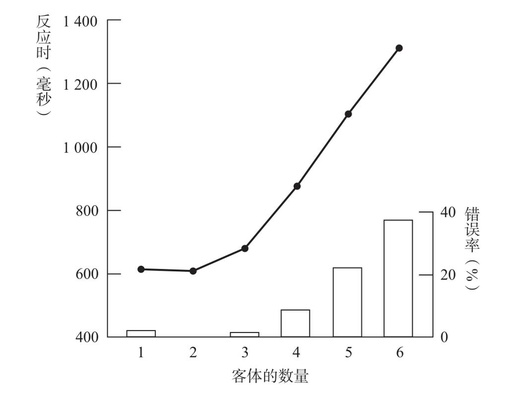

早在一个多世纪之前，心理学家就发现，人类精确快速计数的能力有一条严格的界限。1886年，詹姆斯·麦基恩·卡特尔（James McKeen Cattell）在位于莱比锡的实验室发现，在向被试短暂呈现包含若干黑点的卡片时，如果卡片上的黑点不超过3个，他们可以准确无误地识别黑点的个数2，超过这一界限，错误就会增加。继美国普林斯顿大学的沃伦（Warren）之后，法国巴黎索邦大学的贝特朗·布尔东（Bertrand Bourdon）也开发了用于准确测量对客体进行计数所需时间的新方法3。1908年，布尔东在没有任何高科技实验设备的情况下，通过拼凑一些特殊的工具，以自己为被试展开实验。下文摘自他的原著：
由水平排列的亮点所表示的数字距我的眼睛1米远。一片带着矩形开口的铜板从固定高度下落，使这些亮点只在一段很短的时间内可见……为了测量反应时，我使用了一台仔细校准过的希普计时器（一种电机精密计时器，精确到千分之一秒）。在这些点可见时，通过计时器的电路是闭合的。在这个电路中有一个口腔开关：其主要组成部分是两片独立的铜叶，每片铜叶的表面都覆盖着纤维，将其与口腔隔开。我将这两片铜叶放在门牙间，紧咬的时候两片铜叶彼此接触，一旦识别出点的数量，我必须尽可能快地说出数字，这样我就必然要开口，使铜叶分离，从而切断电流。
正是有了这种简陋的设备，布尔东才发现人类视觉计数的基本规律：对1个到3个亮点计数所需的时间缓慢增加，超出此范围后所需时间突然大幅增加，同时，错误数也突然剧增。这一实验结果得到了数百次验证，至今仍然有效。人类知觉到1个、2个或3个客体所需的时间不到半秒，但超过这个范围，速度和精度都会显著下降（见图3-2）。

当集合中有1个、2个或3个元素时，对它进行计数是很快的，但若元素数大于4，计数的速度会急剧变慢，同时，错误率也开始增加。
图3-2 知觉数量的速度和精度变化趋势
资料来源：重绘自Mandler & Shebo, 1982。
对反应时曲线的仔细测量揭示出几个重要的细节。在3到6个点之间，反应时的增加呈线性，这意味着对每一个新增点进行计数所需要的时间是固定的。超过3个点时，成人每辨识1个点，需要大概200毫秒或300毫秒。这个200至300毫秒的斜率，大致相当于成人尽可能快地出声数数所需要的时间。对儿童而言，辨识的速度下降到每个数字需一两秒钟——反应时曲线的斜率以同样的幅度增加。因此，成年人和儿童都以相对缓慢的速度对超过3个点的集合进行计数。
为什么对1、2和3进行计数会这么快？这一区间内平缓的反应时曲线表明，对前3个客体集合不需要一个一个去数。识别数字1、2和3的过程似乎没有任何数数的动作。
尽管心理学家仍然在琢磨这个不数数的计数过程是如何进行的，他们还是给它起了个名字，称其为“感数”（subitization或subitizing）能力，这个词起源于拉丁文“subitus”，意为“突然”4。这个名字并不恰当，因为尽管非常快速，但是感数并不是一个瞬时事件。识别3个点组成的集合大概需要0.5秒或0.6秒，这跟大声读一个单词或者识别一张熟悉面孔所需要的时间差不多。这个时间也并非恒定不变，识别从1到3的集合，用时会缓慢增加。因此，感数过程可能需要一系列的视觉操作，需要识别的数量越多，整个过程就越复杂。
这一系列操作到底是什么呢？一个被广泛接受的理论假设认为，我们识别由1个、2个或者3个对象组成的小集合之所以很快，是因为它们构成了易辨识的几何图形：1个对象是一个点，2个对象是一条线，3个对象则构成一个三角形。然而，这一假设并不能解释我们为什么对排成直线、因而不形成任何几何线索的数个对象依然可以进行感数操作。的确，没有什么几何参数能够区分罗马数字Ⅱ和Ⅲ，但是我们仍然对其进行感数操作。
心理学家拉纳·特里克（Lana Trick）和泽农·派利夏恩（Zenon Pylyshyn）发现了一种感数失败的情况，它出现在对象重叠以致很难准确觉察它们的位置时。5例如，辨识同心圆的数目时，我们必须通过逐个去数才能知道有2个、3个还是4个。因此，感数过程似乎需要各个对象占据不同的空间位置——正如我们前面所看到的，这一线索对于婴儿辨别面前呈现了几件物品同样重要。
我因此相信，成人的感数过程与婴儿和动物辨别客体数量一样，依赖于负责对客体空间位置进行判断和追踪的视觉系统回路。分布在大脑枕顶区的神经元群能够迅速提取视野内客体的空间位置，并且以并行方式加工这些信息。它们只负责加工客体的位置，而忽略其特性，甚至可以表征被挡在遮屏后面的对象。因此，它们提取的信息对运用近似累加器而言，具有理想的抽象性。我相信，在感数过程中，这些大脑区域迅速地将视觉场景分割成离散的对象。接下来就可以很容易地把它们一一相加，以得出一个近似总量。我在第1章描述过我与让-皮埃尔·尚热一起开发的神经网络模型，它展现了如何通过简单的脑回路来实现这个计算过程6。
为什么这一机制会导致3和4之间的不连续性？如果你还记得，我在前面讲过，累加器的准确性随着数量的增大而下降，因此，区别n与“n+1”要比区别n与“n-1”的难度更大。数字4似乎是我们的累加器产生大量失误的起始值，它会与3和5相混淆。这就是为什么我们不得不在超过4以后开始数数——我们的累加器仍然会给我们提供一个大概的数量，但是这个数量无法精确到某个具体的数字。
我刚刚简述的“客体位置的并行加工”理论并不是唯一解释感数的理论。美国加州大学洛杉矶分校的心理学家兰迪·加利斯特尔（Randy Gallistel）和罗切尔·戈尔曼认为，在我们感数时，即使我们意识不到，我们对所有的元素也都是逐个去数的，但是数的速度非常快7。因此，感数只是一个不需要语言参与的快速序列计数过程。尽管这有悖于直觉，但感数加工实际上需要依次注意每个对象，因而依赖的是一个序列性的、按部就班的算法。这个观点与我的假设分歧最大。我的模型认为，在感数过程中，进入视野中的所有物品被同时加工，而且不需要注意参与——这一过程在认知心理学术语中被称为“并行前注意加工”（parallel preattentive processing）。在我的神经网络模拟中，不管呈现1个、2个还是3个物品，数字探测器都会在同一时间开始响应（尽管随着输入数量的增大，探测器确实需要稍微长一点的时间来达到稳定的激活状态，从而准确给出一个精确的命名）。最重要的是，不同于戈尔曼和加利斯特尔的快速数数假设，我的数字探测器不需要通过心理“聚焦”或标记过程逐个把物品区分出来，一切都是即时而且并行发生的。
这一问题仍然悬而未决，或许能够证明感数不需要按顺序逐个注意每个物品的最好证据来自脑损伤患者：他们不能集中注意地探索视野中的环境，因而也不能数数8。我曾与劳伦特·科恩（Laurent Cohen）医生在巴黎的萨彼里埃医院一起诊察过I太太，她在怀孕期间由于高血压导致脑后动脉梗死。1年后，这一损伤对她的视知觉能力造成的后遗症依然存在。I太太变得无法识别包括面孔在内的某些视觉形状，而且她还抱怨过视觉的奇怪扭曲。当我们要求她描述一个复杂的图像时，她常常会因遗漏重要的细节而无法觉察整体的含义。神经学家将这种疾病称作“组合失认症”（simultanagnosia）。这使得她无法数数。当4个、5个或者6个点在电脑屏幕上快速闪过时，她几乎总是漏数一部分。她试图去数，但是无法把注意力逐次指向每个物品。她数到大约一半的时候就会停止，因为她觉得自己已经全部数完了。另外一个患有相似疾病的患者则陷于相反的错误模式：她对自己已经数过的个体没有概念，会一直不停地一遍一遍地数下去。她会毫不犹豫地告诉我们总共有12个点，而实际上只有4个。
尽管有计数缺陷，这两位患者在对1个、2个或3个点的集合进行计数的时候几乎没有任何困难。她们对小数字的反应非常迅速、自信，而且几乎不会出错。例如，I太太在数3个物品时错误率仅为8%，但是在数4个物品时错误率高达75%。我们经常观察到这种分离：即使脑损伤使患者完全无法逐次按顺序把注意力集中于每一个物品，他们对小数字的知觉仍然完好无损。这就强有力地证明了，在感数过程中并没有顺序计数的行为参与，它仅仅是一种对场景中的物品进行预先注意和并行提取的过程。